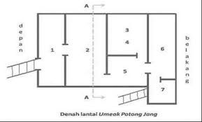

Rumah Adat Bengkulu
Rumah adat tradisional Bengkulu dikenal dengan sebutan *"Rumah Panggung"* atau *"Rumah Limas"* yang mencerminkan kekayaan budaya dan kearifan lokal masyarakat Bengkulu. Rumah ini biasanya dibangun dengan bahan kayu dan atap yang berbentuk limas atau segitiga yang khas. Struktur rumah panggung ini bertujuan untuk menghindari kelembapan dan melindungi penghuni dari gangguan hewan serta cuaca ekstrim. Selain itu, desainnya juga mencerminkan filosofi kehidupan masyarakat Bengkulu yang sangat memperhatikan keselarasan dengan alam sekitar. Rumah adat ini tidak hanya menjadi tempat tinggal, tetapi juga simbol keharmonisan sosial dan tradisi yang diwariskan turun-temurun.
back**Rumah Adat Bengkulu: Rumah Panggung Limas**
Rumah adat Bengkulu, yang sering disebut *Rumah Panggung* atau *Rumah Limas*, adalah bentuk arsitektur tradisional yang memiliki ciri khas dan nilai budaya yang kuat. Rumah ini bukan hanya sekadar tempat tinggal, tetapi juga mencerminkan filosofi hidup masyarakat Bengkulu yang sangat memperhatikan hubungan manusia dengan alam dan adat istiadat.
1. **Struktur dan Bentuk Rumah**
- **Bentuk Panggung**: Rumah adat Bengkulu memiliki bentuk panggung yang tinggi, dengan tiang-tiang besar yang menopang rumah. Ketinggian rumah ini bervariasi, tetapi umumnya lebih tinggi dibandingkan rumah pada umumnya. Tiang-tiang tersebut dibuat dari kayu keras, seperti kayu meranti, yang sangat kuat dan tahan lama.
- **Atap Limas**: Salah satu ciri khas dari rumah adat Bengkulu adalah atap berbentuk limas (segitiga atau piramida). Atap limas ini terdiri dari beberapa lapisan bertingkat, yang tidak hanya memperindah tampilan rumah, tetapi juga memiliki fungsi praktis, seperti melindungi rumah dari hujan dan sinar matahari, serta memberikan sirkulasi udara yang baik.
- **Dinding dan Lantai**: Dinding rumah adat Bengkulu terbuat dari kayu, baik kayu berlapis maupun papan kayu yang disusun secara horizontal. Lantai rumah biasanya menggunakan papan kayu yang disusun rapat. Selain itu, rumah adat Bengkulu memiliki ventilasi yang cukup banyak untuk menjaga udara tetap segar dan mencegah kelembapan.
2. **Filosofi dan Fungsi**
- **Panggung sebagai Simbol Kehidupan**: Rumah panggung ini memiliki fungsi yang lebih dari sekadar tempat berlindung. Posisi rumah yang dibangun di atas panggung melambangkan adanya jarak antara dunia manusia dan dunia bawah (alam bawah sadar, atau dunia roh). Selain itu, rumah panggung juga berfungsi untuk menghindari banjir, dan memberikan sirkulasi udara yang baik di bawah rumah.
- **Keharmonisan dengan Alam**: Masyarakat Bengkulu memandang rumah adat ini sebagai bagian dari keharmonisan hidup dengan alam. Posisi rumah yang tinggi dari tanah memberikan perlindungan dari serangan binatang buas serta kelembapan tanah. Rumah ini juga dibangun dengan bahan alam yang tersedia di sekitar, sehingga menjadi contoh kearifan lokal dalam pemanfaatan sumber daya alam.
3.**Tata Letak dan Ruangan**
- **Ruangan Utama**: Rumah adat Bengkulu umumnya terdiri dari beberapa bagian, seperti ruang tamu, ruang tidur, dan ruang keluarga. Ruang tamu adalah bagian yang sangat penting dalam rumah adat ini, karena sering digunakan untuk menerima tamu, serta menjadi tempat acara adat dan pertemuan keluarga.
- **Pemisahan Ruang**: Biasanya, rumah adat ini memiliki pemisahan ruang yang jelas antara ruang untuk anggota keluarga dengan ruang untuk kegiatan sosial atau adat. Hal ini mencerminkan prinsip dalam masyarakat Bengkulu yang sangat menjaga norma sosial dan kesopanan.
- **Dekorasi**: Pada beberapa bagian rumah, terutama di bagian dinding dan pintu, terdapat ukiran-ukiran khas yang menggambarkan simbol-simbol budaya Bengkulu, seperti motif flora dan fauna yang terinspirasi oleh alam sekitar.
4.**Bahan Bangunan**
- **Kayu**: Sebagian besar bahan bangunan rumah adat Bengkulu terbuat dari kayu, terutama kayu keras seperti kayu meranti, kayu ulin, atau kayu lainnya yang kuat dan tahan lama. Kayu digunakan untuk tiang, dinding, dan lantai rumah.
- **Atap**: Atap rumah adat Bengkulu biasanya terbuat dari bahan alami seperti daun rumbia, ijuk, atau sirap kayu. Namun, di beberapa daerah, atap rumah modern sudah menggunakan bahan seng atau genteng sebagai pengganti bahan tradisional.
5. **Masyarakat dan Fungsi Sosial**
- **Pusat Kegiatan Sosial**: Rumah adat Bengkulu bukan hanya tempat tinggal, tetapi juga pusat kegiatan sosial dan budaya. Rumah ini sering digunakan untuk melaksanakan upacara adat, seperti pernikahan, khitanan, atau acara-acara penting lainnya. Oleh karena itu, tata letak rumah ini sering dirancang dengan mempertimbangkan kenyamanan untuk kegiatan sosial.
- **Fungsi Tradisional**: Beberapa bagian rumah juga digunakan untuk penyimpanan barang-barang berharga, seperti senjata tradisional atau alat pertanian, yang menjadi bagian penting dalam kehidupan masyarakat Bengkulu.
6. **Perkembangan dan Pelestarian**
- Seiring perkembangan zaman, beberapa rumah adat Bengkulu mengalami perubahan, baik dalam hal bahan bangunan maupun desain. Meskipun demikian, masyarakat Bengkulu masih melestarikan rumah adat ini sebagai simbol identitas budaya dan kebanggaan mereka.
- Rumah adat ini sering dijadikan contoh dalam arsitektur modern dengan menggabungkan elemen tradisional dan teknologi bangunan yang lebih modern, untuk menjaga kelestariannya di tengah perubahan zaman.
7. **Kesimpulan**
Rumah adat Bengkulu, dengan bentuk panggung dan atap limas, adalah contoh arsitektur yang mencerminkan kearifan lokal, keindahan alam, serta nilai-nilai sosial masyarakat Bengkulu. Rumah ini bukan hanya menjadi tempat tinggal, tetapi juga simbol hubungan yang harmonis antara manusia, alam, dan tradisi yang telah diwariskan turun-temurun. Sebagai bagian dari warisan budaya, rumah adat Bengkulu menjadi identitas yang kuat dan penting bagi masyarakat setempat.


.jpg)